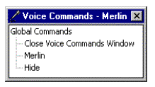

|
| ||
|
| ||
Microsoft Corporation
October 1998
 Download this document in Microsoft Word (.DOC) format (zipped, 25K).
Download this document in Microsoft Word (.DOC) format (zipped, 25K).
Contents
Introduction
Licensing and Distribution
Animation Services
Input Services
Output Services
The Microsoft Agent API provides services that support the display and animation of animated characters. Implemented as an OLE Automation (Component Object Model [COM]) server, Microsoft® Agent enables multiple applications, called clients or client applications, to host and access its animation, input, and output services at the same time. A client can be any application that connects to the Microsoft Agent's COM interfaces.
As a COM server, Microsoft Agent automatically starts up only when a client application uses the COM interfaces and requests to connect to it. It remains running until all clients close their connections. When no connected clients remain, Microsoft Agent automatically exits.
Although you can call Microsoft Agent's COM interfaces directly, Microsoft Agent also includes an ActiveX® control. This control makes it easy to access Microsoft Agent's services from programming languages that support the ActiveX control interface. For more information on the specific API supported from the Agent server and control interfaces, see Programming the Microsoft Agent Server Interface and Programming the Microsoft Agent Control.
In addition to supporting stand-alone programs written for Windows®, Agent can be scripted to support Web pages, provided that the browser supports the ActiveX interface. Microsoft Internet Explorer includes support for ActiveX as well as scripting languages that you can use to program Agent. If you are not using Internet Explorer, consult with your vendor or supplier about the browser's support for ActiveX.
Microsoft Agent is an extension of Microsoft Windows. As a result, it currently supports only Windows 95 or later versions. Microsoft Agent also requires certain system libraries (dlls). The best way to insure that you have these libraries (and their correct versions) is to install Internet Explorer 4.0 or later. You can download the browser from the Microsoft Internet Explorer Web site  .
.
The Microsoft Agent self-extracting executable installs a number of system files and registry entries. Web developers can include the CLSID in the <OBJECT> tag of their HTML page, subject to the provisions of the license agreement displayed when the control is downloaded and installed.
Application developers who want to distribute Microsoft Agent services and any of its components (including Microsoft Agent character files) as part of their application or from their own server must complete a distribution license for Microsoft Agent. For more information on licensing requirements for Microsoft Agent, see the Licensing document at the Microsoft Agent Web site at http://msdn.microsoft.com/msagent/licensing.asp.
Microsoft Agent's animation services manage the animation and movement of a character's image in its own window on the screen. An animation is defined as a sequence of timed and optionally branched frames, composed of one or more images.
To animate a character, you must first load the character. Use the Load method to load the character's data. Microsoft Agent supports two formats for character and animation data: a single structured file and separate files. Typically, you use the single file format (.ACS) when the data is stored locally. The multiple file format (.ACF, .ACA) works best when you want to download animations individually, such as when accessing animations from an HTTP server.
A client application can load only a single instance of the same character. Any attempt to load the same character more than once will fail. However, an application can have multiple instances of the same character loaded by providing separate connections to Microsoft Agent. For example, an application could load the same character from two copies of the Microsoft Agent control.
Microsoft Agent provides a set of characters you can download and use, subject to the provisions of the license agreement. The Microsoft Agent Characters can be downloaded from the Microsoft Agent Web site at http://msdn.microsoft.com/msagent/characterdata.asp.
You can also define your own characters for use with Microsoft Agent. You may use any rendering tool you prefer to create the images, provided that you end up with Windows bitmap format files. To assemble and compile a character's images into animations for use with Microsoft Agent, use the Microsoft Agent Character Editor. This tool enables you to define a character's default properties as well as define animations for the character. The Microsoft Agent Character Editor also enables you to select the appropriate file format when you create a character. You can download the Microsoft Agent Character Editor from the Microsoft Agent Web site at http://msdn.microsoft.com/msagent/agentdevdl.asp.
Instead of loading only a specific character directly by specifying its filename, you can load the default character. The default character is a service intended to provide a shared, central Windows assistant that the user chooses. Microsoft Agent includes a property sheet as part of the default character service, known as the Character Properties window, which enables the user to change their selection of the default character.
Selection of the default character is limited to a character that supports the standard animation set, ensuring a basic level of consistency across characters. This does not exclude a character from having additional animations.
However, because the default character is intended for general-purpose use and may be shared by other applications at the same time, avoid loading the default character when you want a character exclusively for your application.
To load the default character, call the Load method without specifying a filename or path. Microsoft Agent automatically loads the current character set as the default character. If the user has not yet selected a default character, Agent will select the first character that supports the standard animation set. If none is available, the method will fail and report back the cause.
Although a client application can inquire as to the identity of the character, only a user can change its settings. You can use the ShowDefaultCharacterProperties to display the Character Properties window.
The server will notify clients that have loaded the default character when a user changes a character selection, and pass the GUID of the new character. The server automatically unloads the former character and reloads the new character. The queues of any clients that have loaded the default character are halted and flushed. However, the queues of clients that have loaded the character explicitly using the character's filename are not affected. If necessary, the server also handles automatically resetting the text-to-speech (TTS) engine for the new character.
Once a character is loaded, you can use several of Microsoft Agent's methods for animating the character. The first one you use is typically the Show method. Show makes the character's frame visible and plays the animation assigned to the character's Showing state.
Once the character's frame is visible, you can use the Play method, specifying the name of an animation, to play that animation. Animation names are specific to a character definition. As an animation plays, the shape of its window changes to match the image in the frame. This results in a movable graphic image, or sprite, displayed on top of the desktop and all windows, or z-order.
If the character's file is stored locally, you can simply call the Play method. In other cases, such as when you have loaded an .ACF character from an HTTP server, you must use the Get (or Prepare) method to first retrieve the animation data. This will cause Agent to request the animation file from the server and store it in the browser's buffer on the local machine.
The Speak method enables you to program the character to speak, automatically lip-syncing the output. Further details are covered in the Output section of this document.
You can use the MoveTo method to position the character at a new location. When you call the MoveTo method, Microsoft Agent automatically plays the appropriate animation based on the character's current location, then moves the character's frame. Similarly, when you call GestureAt, Microsoft Agent plays the appropriate gesturing animation based on the character's location and the location specified in the call.
To hide the character, call the Hide method. This automatically plays the character associated with the character's Hiding state, then hides the character's frame. However, you can also hide or show a character by setting the character's Visible property.
Microsoft Agent processes all animation calls, or requests, asynchronously. This enables your application's code to continue handling other events while the request is being processed. For example, calls to the Play method place the animation in a queue for the character so that the animations can be played sequentially. However, this means you cannot assume that a call to other functions will necessarily execute after an animation it follows in your code. For example, typically, a statement following a call to Play or MoveTo will execute before the animation finishes.
You can synchronize your code with animations in a character's queue by creating an object reference to the animation request, and, when the animation starts or completes, monitoring the Request events that the server uses to notify clients of the character. For example, if you want a message box to appear when the character finishes an animation, you can put the message box call in your RequestComplete event handling subroutine, checking for the particular request ID.
When a character is hidden, the server does not play animations; however, it still queues and processes the animation request (plays the animation) and passes a request status back to the client. In the hidden state, the character cannot become input-active. However, if the user speaks the name of the character (when speech input is enabled), the server automatically shows the character.
When your client application loads multiple characters at the same time, Microsoft Agent's animation services enable you to animate characters independently or use the Wait, Interrupt, or Stop methods to synchronize their animation with each other.
Microsoft Agent also plays other animations automatically for you. For example, if the character's state has not changed for several seconds, Agent begins playing animations assigned to the character's Idling animations. Similarly, when speech input is enabled, Agent plays the character's Listening animations and then Hearing animations when an utterance is detected. These server-managed animations are called states, and are defined when a character is created. For more information, see Using The Microsoft Agent Character Editor.
A client application provides the primary user interface for interaction with a character. You can program a character to respond to any form of input, from button-clicks to typed-in text. In addition, Microsoft Agent provides events so you can program what happens when the user clicks, double-clicks, or drags the character. The server passes the coordinates of the pointer and any modifier key state for these events.
Because multiple client applications can share the same character and because multiple clients can use different characters at the same time, the server designates one client as the input-active client and sends mouse and voice input only to that client application. This maintains the orderly management of user input, so that an appropriate client responds to the input.
Typically, user interaction determines which client application becomes input-active. For example, if the user clicks a character, that character's client application becomes input-active. Similarly, if a user speaks the name of a character, it becomes input-active. Also, when the server processes a character's Show method, the client of that character becomes input-active.
When a character is hidden, the client of that character will no longer be input-active for that character. The server automatically makes the active client of any remaining character(s) input-active. When all characters are hidden, no client is input-active. However, in this situation, if the user presses the Listening hotkey, Agent will continue to listen for its commands (using the speech recognition engine matching the topmost character of the last input-active client).
If multiple clients are sharing the same character, the server will designate its active client as input-active client. The active character is the topmost in the client order. You can set your client to be the active or not-active client using the Activate method. You can also use the Activate method to explicitly make your client input-active; but to avoid disrupting other clients of the character, you should do so only when your client application is active. For example, if the user clicks your application's window, activating your application, you can call the Activate method to receive and process mouse and speech input directed to the character.
Microsoft Agent includes a pop-up menu (also known as a contextual menu) for each character. The server displays this pop-up menu automatically when a user right-clicks the character. You can add commands for your client application to the menu by defining a Commands collection. For each command in the collection that you define, you can specify Caption and Visible properties. The Caption is the text that appears in the menu when the Visible property is set to True. You can also use the Enabled property to display the command in the menu as disabled and the HelpContextID to support Help support for the property. Define the access key for the menu text by including an ampersand (&) before the text character of the Caption text setting.
The server automatically adds to the menu commands for opening the Voice Commands Window and hiding the character as well as the Commands captions of other clients of the character to enable users to switch between clients. The server automatically adds a separator to the menu between its menu entries and those defined by the client. Separators appear only when there are items in the menu to separate.
To remove commands from a menu, use the Remove method. Note that menu entries do not change while the menu displays. If you add or remove commands or change their properties, the menu displays the changes when the user redisplays the menu.
If you prefer to provide your own pop-up menu services for a character, you can use the AutoPopupMenu property to turn off server handling of the right-click action. You can then use the Click event notification to create your own menu handling behavior.
When the user selects a command from a character's pop-up menu or the Voice Commands Window, the server triggers the Command event of the associated client and passes back the parameters of the input using the UserInput object.
The server also provides a pop-up menu for the character's taskbar icon. When the character is visible, right-clicking this menu displays the same commands as those displayed by right-clicking the character. However, when the character is hidden, only the server-supplied commands are included.
In addition to supporting mouse and keyboard interaction, Microsoft Agent includes direct support for speech input. Because Microsoft Agent's support for speech input is based on Microsoft SAPI (Speech Application Programming Interface), you can use Microsoft Agent with speech recognition command and control engines that include the SAPI-required support. For more information on speech engine requires, see Speech Engine Support Requirements.
Microsoft provides a command-and-control speech recognition engine you can use with Microsoft Agent. You can find further information about available speech engine support and how to use speech engines at the Microsoft Agent download page.
The user can initiate speech input by pressing and holding the push-to-talk Listening hotkey. In this Listening mode, if the speech engine receives the beginning of spoken input, it holds the audio channel open until it detects the end of the utterance. However, when not receiving input, it does not block audio output. This enables the user to issue multiple voice commands while holding down the key, and the character can respond when the user isn't speaking.
The Listening mode times out once the user releases the Listening key. The user can adjust the time-out for this mode using the Advanced Character Options. You cannot set this time-out from your client application code.
If a character attempts to speak while the user is speaking, the character's audible output fails though text may still be displayed in its word balloon. If the character has the audio channel while the Listening key is pressed, the server automatically transfers control back to the user after processing the text in the Speak method. An optional MIDI tone is played to cue the user to begin speaking. This enables the user to provide input even if the application driving the character failed to provide logical pauses in its output.
You can also use the Listen method to initiate speech input. Calling this method turns on the speech recognition for a predefined period of time. If there is no input during this interval, Microsoft Agent automatically turns off the speech recognition engine and frees up the audio channel. This avoids blocking input to or output from the audio device and minimizes the processor overhead the speech recognition uses when it is on. You can also use the Listen method to turn off speech input. However, be aware that because the speech recognition engine operates asynchronously, the effect may not be immediate. As a result, it is possible to receive a Command event even after your code called Listen to turn off speech input.
To support speech input, you define a grammar, a set of words you want the speech recognition engine to listen and match for as the Voice setting for a Command in your Commands collection. You can include optional and alternative words and repeated sequences in your grammar. Note that Agent does not enable the Listening hotkey until one of its clients has successfully loaded a speech engine or has authored a Voice for one of its Command objects.
Whether the user presses the Listening hotkey or your client application calls the Listen method to initiate speech input, the speech recognition engine attempts to match an utterance's input to the grammar for the commands that have been defined, and passes the information back the server. The server then notifies the client application using the Command event (IAgentNotifySink::Command); passing back the UserInput object that includes the command ID of the best match and next two alternative matches (if any), a confidence score, and the matching text for each match.
The server also notifies your client application when it matches the speech input to one of its supplied commands. While the command ID is NULL, you still get the confidence score and text matched. When in Listening mode, the server automatically plays the animation assigned to the character's Listening state. Then, when an utterance is actually detected, the server plays the character's Hearing state animation. The server will keep the character in an attentive state until the utterance has ended. This provides the appropriate social feedback to cue the user for input.
If the user disables speech input in Advanced Character Options, the Listening hotkey will also be disabled. Similarly, attempting to call the Listen method when speech input is disabled will cause the method to fail.
A character's language ID setting determines its default speech input language; Microsoft Agent requests SAPI for an installed engine that matches that language. If a client application does not specify a language preference, Microsoft Agent will attempt to find a speech recognition engine that matches the user default language ID (using the major language ID, then the minor language ID). If no engine is available matching this language, speech is disabled for that character.
You can also request a specific speech recognition engine by specifying its mode ID (using the character SRModeID property). However, if the language ID for that mode ID does not match the client's language setting, the call will fail (raise an error in the control). The speech recognition engine will then remain the last successfully set engine by the client, or if none, the engine that matches the current system language ID. If there is still no match, speech input is not available for that client.
Microsoft Agent automatically loads a speech recognition engine when speech input is initiated by a user pressing the Listening hotkey or the input-active client calls the Listen method. However, an engine may also be loaded when setting or querying its mode ID, setting or querying the properties of the Voice Commands Window, querying SRStatus, or when speech is enabled and the user displays the Speech Input page of the Advanced Character Options. However, Microsoft Agent only keeps loaded the speech engines that clients are using.
In addition, to the Command event notification, Agent also notifies the input-active client when the server turns the Listening mode on or off, using the ListenStart and ListenComplete events (IAgentNotifySinkEx::ListeningState). However, if the user presses the Listening mode key and there is no matching speech recognition engine available for the topmost character of the input-active client, the server starts the Listening hotkey mode time-out, but does not generate a ListenStart event for the active client of the character. If, before the time-out completes, the user activates another character with speech recognition engine support, the server attempts to activate speech input and generates the ListenStart event.
Similarly, if a client attempts to turn on the Listening mode using the Listen method and there is no matching speech recognition engine available, the call fails and the server does not generate a ListenStart event. In the Microsoft Agent control, the Listen method returns False, but the call does not raise an error.
When the Listening key mode is on and the user switches to a character that uses a different speech recognition engine, the server switches to and activates that engine and triggers a ListenComplete and then a ListenStart event. If the activated character does not have an available speech recognition engine (because one is not installed or none match the activated character's language ID setting), the server will trigger the ListenComplete event for the previously activated character and passes back a value in the Cause parameter. However, the server does not generate ListenStart or ListenComplete events for the clients that do not have speech recognition support.
If a client successfully calls the Listen method and a character without speech recognition engine support becomes input-active before the Listening mode time-out completes, and then the user switches back to the character of the original client, the server will generate a ListenStart event for that client.
If the input-active client switches speech recognition engines by changing SRModeID while in Listening mode, the server switches to and activates that engine without re-triggering the ListenStart event. However, if the specified engine is not available, the call fails (raises an error in the control) and the server also calls the ListenComplete event.
The Voice Commands Window displays the current active voice commands available for the character. The window appears when the Open Commands Window command is chosen or the Visible property of the CommandsWindow object is set to True. If the speech engine has not yet been loaded, querying or setting this property will cause Microsoft Agent to attempt to initialize the engine. If the user disables speech, the window can still display; however, it will include a text message that informs the user that speech is currently disabled.
The input-active client's commands appear in the Voice Commands Window based on the Voice Caption and Voice property settings listed under the Voice Caption of their Commands collection.

Figure 1. Voice Commands Window
The Voice Commands Window appears when the Open Commands Window command is chosen. The input-active client's commands appear in the Voice Commands Window based on the Voice Caption and Voice property settings listed under Voice Caption of the Commands collection.
The Voice Commands Window also lists the Voice Caption of the Commands collection for other clients of the character, and the following server-generated voice commands for general interaction under the Global Commands entry:
| Voice Caption | Voice Grammar |
| Open | Close Voice Commands Window | ((open | show) [the] commands [window] | what can I say [now])
toggles with: close [the] commands [window] |
| Hide | hide * |
| CharacterName | CharacterName** |
| Global Commands | [show] [me] global commands |
* A character is listed here only if it is currently visible.
** All loaded characters are listed.
Speaking the voice command for another client's Commands collection switches to that client, and the Voice Commands Window displays the commands of that client. No other entries are expanded. Similarly, if the user switches characters, the Voice Commands Window changes to display the commands of its input-active client. If the client is already input-active, speaking one of its voice commands has no effect. (However, if the user collapses the active client's subtree with the mouse, speaking the client name redisplays the client's subtree.)
If a client has voice commands, but no Voice setting for its Commands object (or no Voice Caption), the tree displays "(command undefined)" as the parent entry -- but only when that client is input-active and the client has commands in its collection that have Caption and Voice settings.
The server automatically displays the commands of the current input-active client and, if necessary, scrolls the window to display as many of the client's commands as possible, based on the size of the window. If the character has no client entries, the Global Commands entry is expanded.
If the user speaks "Global Commands," the Voice Commands Window always displays its associated subtree entries. If they are already displayed, the command has no effect.
Although you can also display or hide the Voice Commands Window from your application's code using the Visible property, you cannot change the Voice Commands Window size or location. The server maintains the Voice Commands Window's properties based on the user's interaction with the window. Its initial location is immediately adjacent to the character's taskbar icon.
The Voice Commands Window is included in the ALT+TAB window order. This enables a user to switch to the window to scroll, resize, or reposition the window with the keyboard.
The Listening Tip is another speech input service provided by Microsoft Agent. When speech input is installed, Agent includes a special tooltip window that appears when the user presses the Listening hotkey or calls the Listen method. The Listening Tip appears only when the speech services are available. If no client has authored a voice command or successfully loads a speech engine, the Listening Tip does not appear. Further, both speech input and the Display Listening Tips option in the Advanced Character Options must be enabled for the tip to appear.
The following table summarizes the display of the Listening Tip when speech recognition is enabled.
| Action | Result |
| User presses the Listening mode hotkey or input-active calls the Listen method | The Listening Tip appears below the active client's character and displays:
-- CharacterName is listening --
If the client hasn't defined a VoiceCaption its Commands object, the value of its Caption property is used. The first line identifying the character is centered. The second line is left justified and breaks to a third line when it exceeds the Listening Tip's maximum width. If an input-active client of the character does not have a caption or defined voice parameters for its Commands object, the Listening Tip displays: -- CharacterName is listening --
If there are no visible characters, the Listening Tip appears adjacent to the character's taskbar icon and displays: -- CharacterName is listening --
If the speech recognition is still initializing, the Listening Tip displays: -- CharacterName is preparing to listen --
If the audio channel is busy, as when the character is audibly speaking or some other application is using the audio channel, the Listening Tip displays: -- CharacterName is not listening --
If there is no language-compatible speech engine installed for the input-active client's character, the Listening Tip displays the following, where Language represents the selected language of the character: -- CharacterName is not listening -
If the audio device is not available for other reasons, such as when it is busy or there is some error in attempting to open the audio device, the following tip appears when the Listening mode is activated: -- CharacterName is not listening -
If the input-active client application has not defined any Voice settings for commands and has also disabled voice parameters for Agent's global commands, this tip appears: CharacterName is not listening -
If all characters are hidden, the Listening Tip displays the following text: CharacterName is listening -
|
| User speaks a voice command | If the spoken text matches a client- or server-defined command, the Listening Tip appears below the active client's character and displays:
-- CharacterName is listening -
However, when a recognition is passed back and the Listening mode has timed out, but the Listening Tip time-out has not, or if the Listening mode is still in effect, but the audio channel is not yet available (for example, the user is still holding the Listening key or the Listening mode has not timed out, because the character is speaking), the Listening Tip displays: CharacterName is not listening -
When the spoken text matches a server-defined command, but the server does not act on it because the command has a low confidence score, the second line of the Listening Tip displays: Didn't understand your request. The first line is centered. The second line is left-justified and breaks to a third line when it exceeds the Listening Tip's maximum width. |
The Listening Tip automatically times out after being presented. If the "Heard" text time-out completes while the user is still holding down the hotkey, the tip reverts to the "listening" text unless the server receives another matching utterance. In this case, the tip displays the new "Heard" text and begins the time-out for that tip text. If the user releases the hotkey and the server is displaying the "Heard" text, the time-out continues and the Listening Tip window is hidden when the time-out interval elapses.
If the server has not yet attempted to load a speech recognition engine, the Listening Tip will not display. Similarly, if the user has disabled the display of the Listening Tip or disabled speech input in Advanced Character Options, the Listening Tip will not be displayed.
The Listening Tip does not appear when the pointer is over the character's taskbar icon. Instead, the standard notification tip window appears and displays the character's name.
Client applications cannot write directly to the Listening Tip, but you can specify alternative text that the server displays on recognition of a matching voice command. To do this, set the Confidence property and the new ConfidenceText property for the command. If spoken input matches the command, but the best match does not exceed the confidence setting, the server uses the text set in the ConfidenceText property in the tip window. If the client does not supply this value, the server displays the text (grammar) it matched.
The Listening Tip text appears in the language based on the input-active client's character language ID setting, regardless of whether there is a language-compatible speech recognition engine available.
The Advanced Character Options window provides options for users to adjust their interaction with all characters. For example, users can disable speech input or change input parameters. Users can also change the output settings for the word balloon. These settings override any set by a client application or set as part of the character definition. Your application cannot change or disable these options, because they apply to the general user preferences for operation of all characters. However, the server will notify your application (DefaultCharacterChange) when the user changes and applies an option. You can also display or close the window using the window's Visible property and access its location through its Top and Left properties.
In addition to supporting the animation of a character, Microsoft Agent supports audio output for the character. This includes spoken output and sound effects. For spoken output, the server automatically lip-syncs the character's defined mouth images to the output. You can choose text-to-speech (TTS) synthesis, recorded audio, or only word balloon text output.
If you use synthesized speech, your character has the ability to say almost anything, which provides the greatest flexibility. With recorded audio, you can give the character a specific or unique voice. To specify output, provide the spoken text as a parameter of the Speak method.
Because Microsoft Agent's architecture uses Microsoft SAPI for synthesized speech output, you can use any engine that conforms to this specification, and supports International Phonetic Alphabet (IPA) output using the Visual method of the ITTSNotifySinkW interface. For further information on the engine requires, see Speech Engine Requirements.
A character's language ID setting determines its TTS output. If a client does not specify a language ID for the character, the character's language ID is set to the user default language ID. If the character's definition includes a specific engine and that engine can be loaded and it matches the character's language setting, that engine will be used. Otherwise, Microsoft Agent enumerates the other available engines and requests a SAPI best match based on language, gender, and age (in that order). If there is no matching engine available, there is no TTS output for that client's use of the character. Agent attempts to load the TTS engine on the first Speak call or when you query or successfully set its mode ID.
A client application can also specify a TTS engine for its character (using the TTSModeID property). This overrides the server's attempt to automatically find a matching engine based on the character's preferred TTS mode ID or the character's current language ID setting. However, if that engine is not installed (or cannot otherwise be loaded), the call will fail (and raise an error in the control). The server then attempts to load another engine based on the language ID, compiled character TTS setting, and available TTS engines. If there is still no match, TTS is not available for that client, but the character can still speak into its word balloon.
Only the TTS engines in use by any client remain loaded. For example, if a character has a defined preference for a specific engine and that engine is available, but your client application has specified a different engine (by setting a character's language ID differently from the engine or specifying a different mode ID), only the engine specified by your application remains loaded. The engine matching the character's defined preference for a TTS setting is unloaded (unless another client is using the character's compiled engine setting).
Microsoft Agent enables you to use audio files for a character's spoken output. You can record audio files and use the Speak method to play that data. Microsoft Agent animation services automatically support lip-syncing the character mouth by using the audio characteristics of the audio file. Microsoft Agent also supports a special format for audio files, which includes additional phoneme and word-break information for more enhanced lip-sync support. You can generate this special format using the Microsoft Linguistic Information Sound Editing Tool.
Spoken output can also appear as textual output in the form of a cartoon word balloon. This can be used to supplement the spoken output of a character or as an alternative to audio output when you use the Speak method.
Figure 2. The Word Balloon
You can also use a word balloon to communicate what a character is "thinking" using the Think method. This displays the text you supply in a still "thought" balloon. The Think method also differs from the Speak method in that it produces no audio output.
Word balloons support only captioned communication from the character, not user input. Therefore, the word balloon does not support input controls. However, you can easily provide user input for a character, using interfaces from your programming language or the other input services provided by Microsoft Agent, such as the pop-up menu.
When you define a character, you can specify whether to include word balloon support. However, if you use a character that includes word balloon support, you cannot disable the support.
Microsoft Agent also enables you to include sound effects as a part of a character's animation. Using the Microsoft Agent Character Editor, you can specify the filename of standard Windows sound (.WAV) files to trigger on a given frame. Note that Microsoft Agent does not mix sound effects and spoken output, so spoken output does not begin until a sound effect completes. Therefore, avoid any long or looping sound effect as a part of a character's animation.
Did you find this material useful? Gripes? Compliments? Suggestions for other articles? Write us!
© 1999 Microsoft Corporation. All rights reserved. Terms of use.